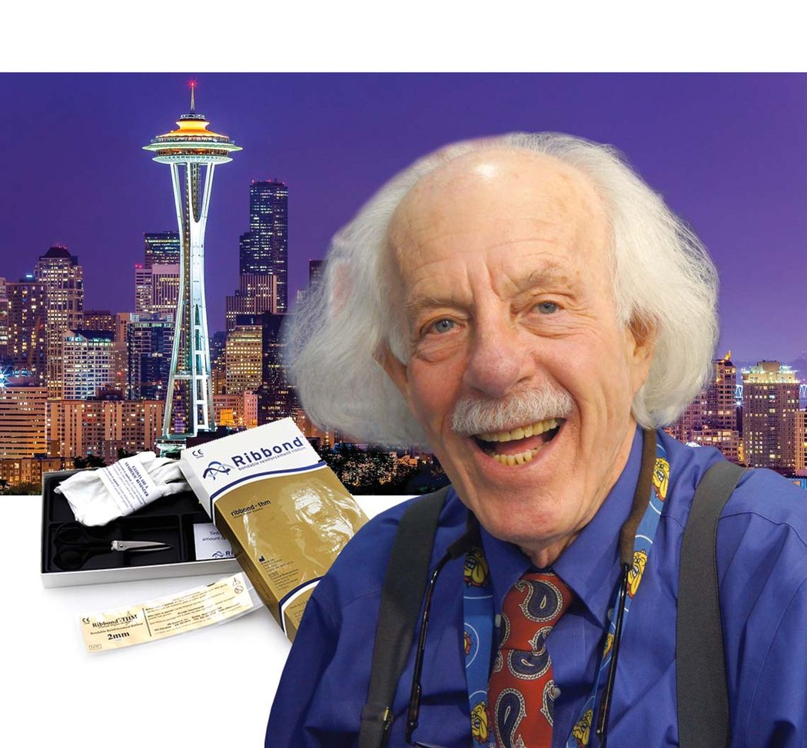
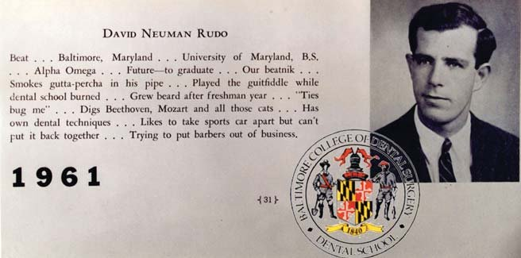
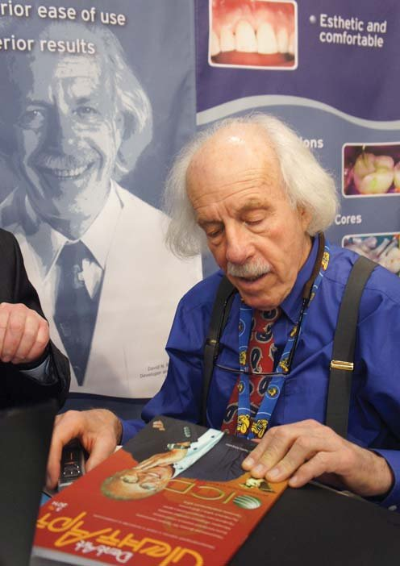
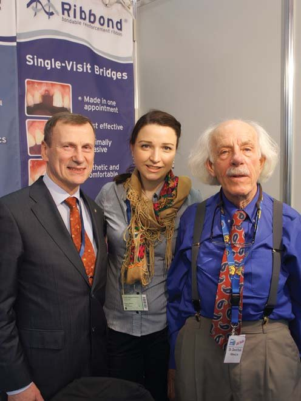
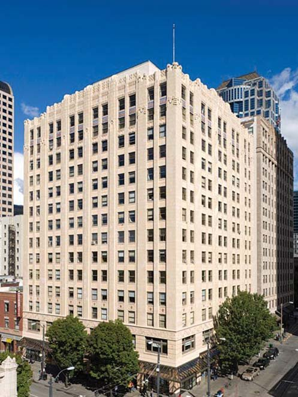
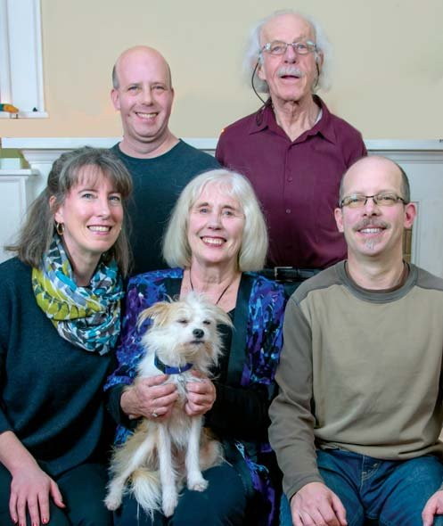
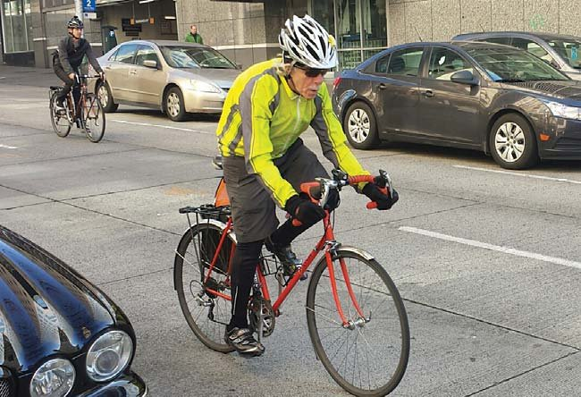
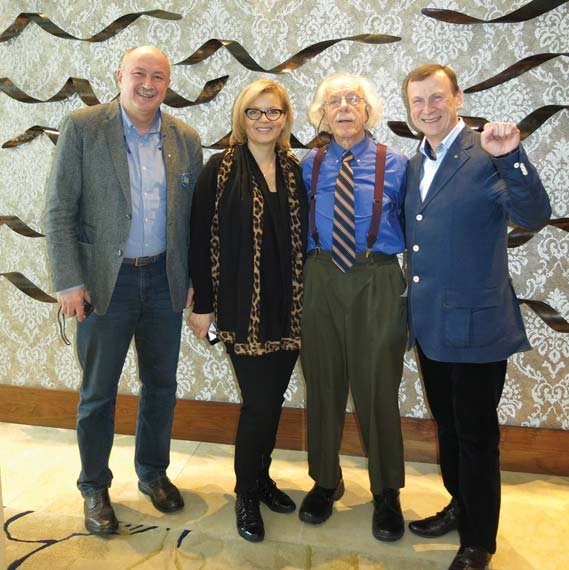

Вітальня · журнал «ДентАрт» 2015 №2
Доктор Девід Рудо: «Краще мати функціональні, а не ідеальні лише зовні зуби»
DR. DAVID RUDO INTERVIEW

У «Вітальні» журналу «ДентАрт» цього разу читачі мають нагоду почути роздуми про сучасні тенденції в стоматології доктора Девіда Рудо — піонера армування реставрацій, засновника і президента компанії «Риббонд», яка подарувала лікарям і пацієнтам матеріал, що вже багато років залишається золотим стандартом у реставрації зубів композитом.
Девід Ньюмен Рудо народився 9 лютого 1935 р. у Балтиморі, штат Меріленд, США, живе в місті Сіетл. 1961 р. закінчив Стоматологічну школу Мерілендського університету. Доктор стоматології, член Академії біоміметичної стоматології.
«Якщо м'язам комфортно, усе працює добре»
— Дорогий докторе Рудо! Щиро дякую за згоду бути гостем журналу «ДентАрт»! Ідея «Вітальні» нашого журналу — це погляд на професію через життєвий шлях особистості. Коли Ви зрозуміли, що стоматологія — Ваше покликання?
— У якому віці я зрозумів, що хочу бути стоматологом, не пам'ятаю... Перш за все я хотів здобути професію і працювати на себе, а не на велику компанію. Мені завжди подобалося працювати руками і розбиратися, як влаштовані ті чи інші речі. Зваживши всі аспекти стоматології, я зрозумів, що ця професія якраз для мене. Крім того, коли я навчався в стоматологічній школі, то зрозумів, що багато речей у нашій спеціальності, які я вважав значущими, виявилися абсолютно неважливими. У стоматологічній школі я ще не аналізував проблеми. Трохи пізніше мої справи покращилися, оскільки в мене з'явилося власне бачення і розуміння речей. Коли я почав іти саме таким шляхом, мені стало ще цікавіше вчитися.
Стоматологія стала тим шляхом, який я шукав. Працювати на себе, працювати з людьми, зрозуміти суть проблеми, а потім спробувати вирішити її... Пізніше я заглибився в біоміметичну стоматологію, далі був залучений до розвитку відновлення зубних рядів імплантатами. Кожного разу я намагався спершу уявити собі наявну проблему, а потім знайти рішення цієї проблеми. Сподіваюся, я відповів на Ваше запитання…
— Але ж Ви відзначаєте свій день народження в День Святої Аполлонії, покровительки стоматологів! Отже, Ваш вибір стати стоматологом усе ж є провидінням?
— Дякую, що звернули увагу на те, що мій день народження збігається з Днем Святої Аполлонії. Думка про те, що, можливо, саме доля вплинула на мій вибір професії стоматолога, ніколи не спадала мені на думку.
— Ви піонер сучасного армування реставрацій, і Ваш матеріал Риббонд є золотим стандартом у реставрації зубів композитом… Як народилася ця ідея і що означає назва Риббонд?

Девід Рудо в Стоматологічній школі Мерілендського університету. Уже 1961 р. доктор Рудо застосовував «власні стоматологічні техніки» і «намагався залишити цирульників без роботи».
— Дякую за комплімент! Що стосується питання, як народилася ідея Риббонда... У 1960-70-80-х роках я був членом Пародонтального дослідницького клубу, і нас цікавило питання імплантації. Мене зокрема завжди цікавила тема оклюзії. Я вважав, що для того, щоб зрозуміти, як робити імплантати, потрібно мати глибоке уявлення про оклюзійні взаємовідношення. Моя концепція оклюзії полягає в тому, що якщо м'язам комфортно, вони задоволені, то все працює добре.
Я створював тимчасові мостоподібні конструкції на імплантатах з пластмаси, застосовував у порожнині рота і вже після першого прийому мав уявлення про оклюзійні взаємовідношення пацієнта. Це новшество дозволяло досягти прийнятної оклюзії вже після першого прийому. Через деякий час я адаптував тимчасові конструкції, покращував їхню взаємодію з функціональними органами, м'язами, щелепами, робив їх комфортнішими для пацієнтів, однак зіткнувся з їхнім зміщенням. Мені було потрібне щось, що скріплювало б мостоподібні конструкції і утримувало їх у певному положенні. Ось чому я замислився про волокно. Мій друг колись розповідав мені про особливе прозоре волокно, і я написав листа в одну компанію, попросивши надати мені зразки цього волокна. Зразки надіслали, але вони були дуже важкі, об'ємні і для моїх цілей не годилися. Мій друг, який займався дослідженнями в цій компанії, попросив мене провести науково-дослідну роботу для цієї компанії, і потрібно було знайти когось, хто горів би бажанням займатися цим і спробувати різні можливості застосування волокна. На моє прохання мені надіслали нові зразки, які виявилися набагато кращими за попередні і більше підходили для моїх цілей, оскільки було проведено плазмову обробку матеріалу, яка змінила характер волокна, і воно стало вологостійким. Я не зупинявся і намагався покращити конструкцію. Тоді я попросив мого друга знайти матеріал, який був би у формі тонкого шару, повторював контури конструкції і утримував її в одному положенні. Роками пізніше я дізнався від свого керівника, який був фахівцем у галузі волоконних композитних матеріалів, чому скловолокно працювало саме так. Але тоді я ще не так цікавився наукою, хоча вже ставив правильні запитання.
Риббонд означає — «стрічка, яка клеїться». Звідки взялася така назва? Якось на вечірці я зустрів свого друга, з яким не бачився кілька років. Він працював у сфері маркетингу і реклами, а саме, створював назви для компаній. Він попросив мене надіслати йому факсом опис моєї компанії і продукту, а він придумає для неї назву. Я написав, що це смужка, яка клеїться до композиту. І він надіслав мені кілька варіантів назв, першою з яких було — «Риббонд». Люди платять сотні і тисячі доларів за створення бренду, імені для своєї компанії, а мені воно дісталося абсолютно безкоштовно!

Знайомство з журналом «ДентАрт».
«У стоматології США потрібен культурний переворот»
— Наскільки популярна ідея армування реставрацій серед стоматологів різних країн і континентів?
— Якщо ми говоримо тільки про реставрації, то думаю, армування сьогодні застосовується дуже-дуже рідко. Частіше це використовують для діагностичного фото, щоб подивитися, як виглядатиме запланована конструкція в зубному ряду. У США стоматологам платять за ту кількість зубів, яку вони видалять. Що більше зубів вони видалять, то більше грошей їм заплатять. Це призводить до радикальних змін у зубному ряду. Пацієнти ж, навпаки, хочуть зберегти якомога більше своїх зубів, не видаляти їх. Коли люди побачать можливості цих відновлень, можливо, щось зміниться. Не знаю, чи доживу я до того моменту, коли станеться такий культурний переворот.

Лікарі клініки-студії «Аполлонія» Сергій Радлінський і Ксенія Лазарєва з народженим у День Святої Аполлонії доктором Девідом Рудо на стоматологічній виставці в Кельні. Березень 2015 р.
У США страхові компанії не покривають цей тип реставрації, вона не вказана в контракті. Я був дуже здивований, що уряд не оплачує цю страховку, і це для мене незрозуміло. Через це пацієнти більш прискіпливі і вимогливі. Усе це цілком зрозуміло. У США люди, які мають гроші і платять за лікування самостійно, а не через страхову компанію, надають перевагу саме реставраційному методу лікування. Пацієнти, які залежать від страхових компаній, дотримуються принципу: мені не потрібен дорогий одеколон, дозвольте мені пахнути собою. Суспільство змінилося... І далі більше: я не хочу йти до хірурга, якщо в мене втома в ногах — відріжте мені ноги! А якщо буде смуток у голові — відріжте мою голову?!
— Відомо, що Ваші ідеї армування реставрацій, засновані на біомеханіці природного зуба, лягли в основу створення Академії біоміметичної стоматології… Можете розповісти детальніше про цю Академію?
— Академія біоміметичної стоматології — це спадщина програми, яку дехто називає програмою Девіда Аллемана… Девід Аллеман створив 6 уроків використання композитних матеріалів, які ґрунтувалися на опублікованих дослідженнях. Він об'єднав серії публіцистичних статей із цього виду стоматології, з реставрацій композитом, на підставі наукових даних. Готуючи ці публікації, він натрапив на фахівця з Туреччини Сельму Бейлі, яка одна з перших провела дослідження Риббонда в реставраціях композитом і опублікувала статтю про зростання полімеризаційного стресу та вплив цього фактора на формування тріщин. Ця стаття стала дуже важливим документом для Академії. В Академії проводився курс післядипломної освіти, заснований на програмі з 6 уроків… Академія є самостійною організацією, але ці 6 уроків стали основоположною ідеєю в нашій Академії.
«У природі не все буває глянцевим»
— Раніше Ви вели стоматологічну практику, але потім залишили її… Що стало причиною завершення лікарської кар'єри: складні пацієнти, юристи по сусідству чи Риббонд?
— Риббонд! (сміється) Я змінював роботу чотири рази. Матінка-природа подарувала мені довге життя. У мене багато років поспіль була хороша стоматологічна практика, я займався цим багато років, але не можна стояти біля крісла всі 80 років. У мене не було можливості поєднувати стоматологічну практику з чимось іще. Тому зараз я продовжую накопичувати стоматологічний досвід і займатися стоматологією, але лише тією її частиною, яка не пов'язана безпосередньо з прийомом пацієнтів.

Головне управління фірми «Риббонд» розташоване в центрі Сіетла, в історичній будівлі, яка отримала Золотий сертифікат системи LEED (система «Лідерство в енергетичному та екологічному проєктуванні»).
— Ми знаємо, наскільки шановані в Америці здорові зуби, чарівна усмішка... Але яка роль стоматології в житті простої людини, в якій би країні і на якому континенті вона не жила?
— Гарне запитання. У кожного з нас є своя думка. Суть усмішки в Америці полягає в тому, що зуби мають бути ідеальними і білими! Перлинно-білими, як кераміка в туалеті! Це американський стандарт! І якщо подивитеся на туалети в Америці, ви побачите цей самий американський стандарт… Але це виглядає абсолютно неприродно! В Америці багато чого виглядає неприродно, як, наприклад, Лас-Вегас... Як на мене, то невеликі вади на зубах надають їм певного характеру та індивідуальності. У природі не все буває глянцевим!
Яскраво-білий колір зубів у 60-річної людини виглядає як обман, як щось неприродне. Для мене краса — це коли людина виглядає відповідно до свого віку, це виглядає природно. На жаль, буває так, що люди вирішують здобути привабливу усмішку за рахунок зміни положення і розмірів зубів. Але часто саме ті пропорції зубів, які ми маємо від природи, є фізіологічними і функціональними. Виконуючи свої функції, зуби мають великий потенціал до саморегуляції, самоадаптації, є специфічні механізми самозахисту і самозбереження. Я завжди робив особливий акцент на оклюзійних взаємовідношеннях. На етапі побудови оклюзії зубів фісури і горби мають бути в анатомічно правильному положенні, щоб зуби виконували свої функції. Краще мати функціональні, а не ідеальні лише зовні зуби. Якщо ви аналізуєте оклюзію, то розумієте це.

Разом — дружна родина! За годинниковою стрілкою: син Бен, др Рудо, син Джеремі, дружина Джоан, собака Чіві і донька Шошана.
— Знаю, що Ви й зараз ведете активний спосіб життя, займаєтеся гірськими лижами, їздите на велосипеді. А адже могли б у свої роки грітися на сонечку і їздити автомобілем… Що означає для Вас фізична активність — вона забирає сили чи додає?
— Життя занадто коротке! Фізична активність — це невід'ємна частина мого життя, вона мені потрібна. Якщо я не займаюся спортом, то не почуваюся в гармонії з самим собою, у мене погане самопочуття і, відповідно, оточуючим людям зі мною теж некомфортно. Усі фізично активні люди розуміють це. І я бачу, ви поділяєте мої думки. З віком рівень енергії і м'язової маси стає набагато нижчим, ніж має бути, тому я веду активний спосіб життя. Втомлююся, але почуваюся краще!
— Як Ваша родина ставиться до Вашого пристрасного захоплення Риббондом — просто терпить це чи активно підтримує?
— Вони терплять моє захоплення, розуміючи, що це частина мене. Якщо родина не підтримуватиме і не захищатиме те, що я роблю, то прийде хтось інший, а слідом дуже швидко прийде і кінець. Як і в будь-якому сімейному бізнесі, ми боремося в цьому житті як родина, як одне ціле!

Майже пів століття доктор Рудо їздить на роботу велосипедом.
— Що б Ви хотіли побажати читачам професійного стоматологічного журналу «ДентАрт»?
— Сподіваюся, що ваші читачі будуть глибоко вникати в проблеми і побажання пацієнтів зі стоматологічними хворобами. Сподіваюся, вони лікуватимуть пацієнтів згідно з їхніми побажаннями, але тим методом, який буде найкращим саме для цього пацієнта. Хочу побажати стоматологам, щоб вони думали насамперед про потреби пацієнта, а не про кількість грошей, які вони можуть з ним заробити.
— Дякую Вам, дорогий докторе Рудо, за інтерв'ю і бажаю Вам від імені читачів і редакції нашого журналу міцного здоров'я і активного довголіття! Ми Вами захоплюємося!

З українськими стоматологами Мироном Угрином, Мирославою Дрогомирецькою і Сергієм Радлінським у доктора Девіда Рудо багато спільного в підходах до лікування пацієнтів. Під час Генеральної Асамблеї Міжнародної федерації естетичної стоматології. Чикаго, США, 2014 р.